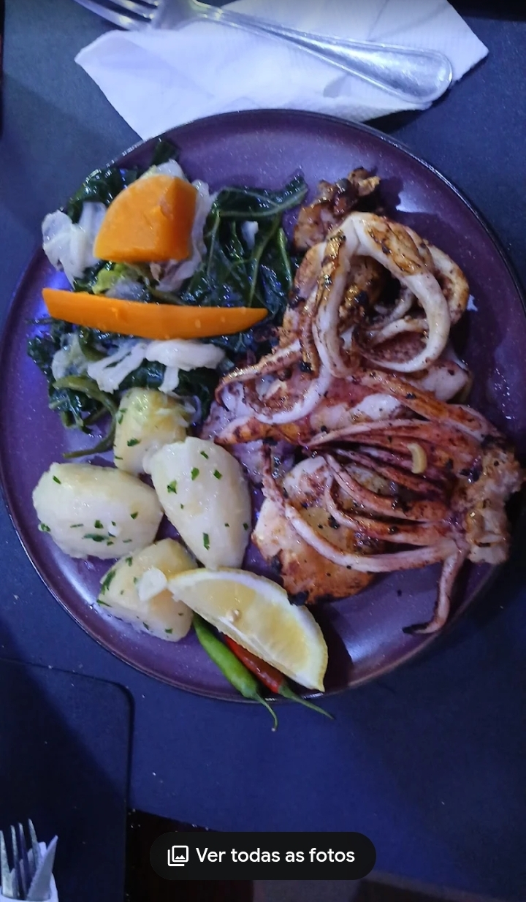
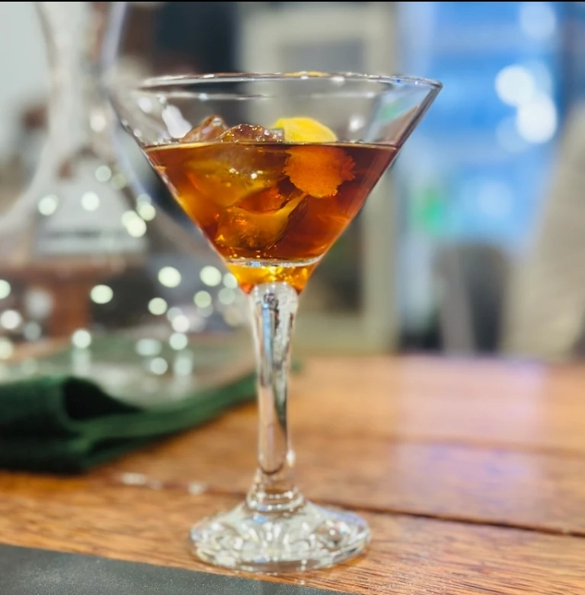
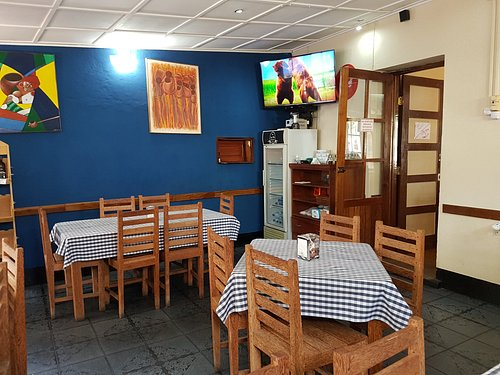
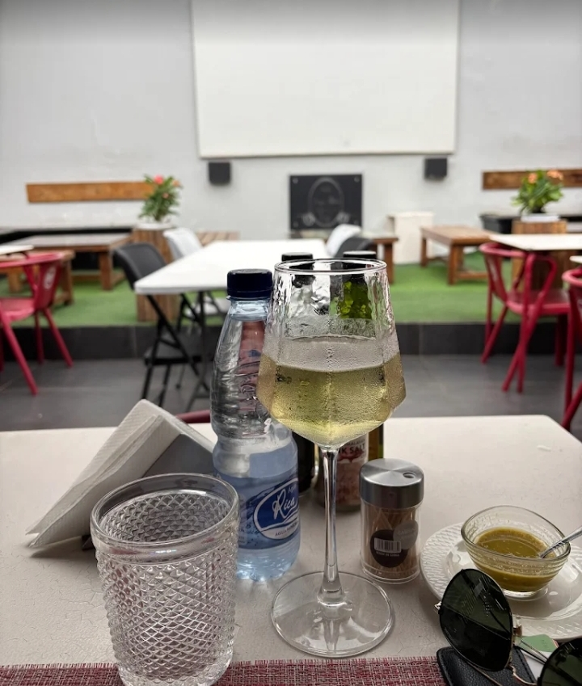
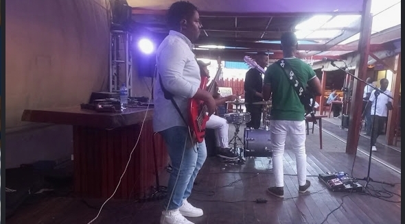

Receitas preparadas com sabor autêntico e apresentação sofisticada.
Bebidas especiais para transformar cada noite numa experiência memorável.
Música, conforto e energia perfeita para relaxar e aproveitar.






Buffet variado com o melhor da cozinha regional e internacional. Opções vegetarianas e veganas disponíveis.
Os melhores petiscos e drinks (tente a nossa famosa Caipirinha!) com preços especiais das 17h às 20h.
Trabalhamos com reservas obrigatórias para garantir o seu conforto. Reserve com antecedência!
Espaço totalmente adaptado com estacionamento, entrada e WC acessível para pessoas com mobilidade reduzida.
Boa lista de vinhos, seleção de cervejas especiais e cocktails exclusivos.
Av. Samora Machel, 284, Quelimane
Aberto todos os dias a partir das 08:00
+258 85 679 7652
3.9 estrelas no Google (363 avaliações)
No Xeque-Mate, cada detalhe foi pensado para sua melhor experiência
Segunda a Domingo: 08:00 - 23:00
Happy Hour: 17:00 - 20:00
Small Hours: Até às 02:00 (fins de semana)
Cartões de crédito
Cartões de débito
Pagamentos móveis (NFC)
Dinheiro
Estacionamento gratuito no local
Estacionamento acessível para cadeiras de rodas
Muitos lugares disponíveis
Cadeiras de refeição para crianças
Menu infantil disponível
Indicado para aniversários de crianças
Ambiente familiar
Faça já sua reserva e descubra porque o Xeque-Mate é referência em Quelimane.
Falar no WhatsApp